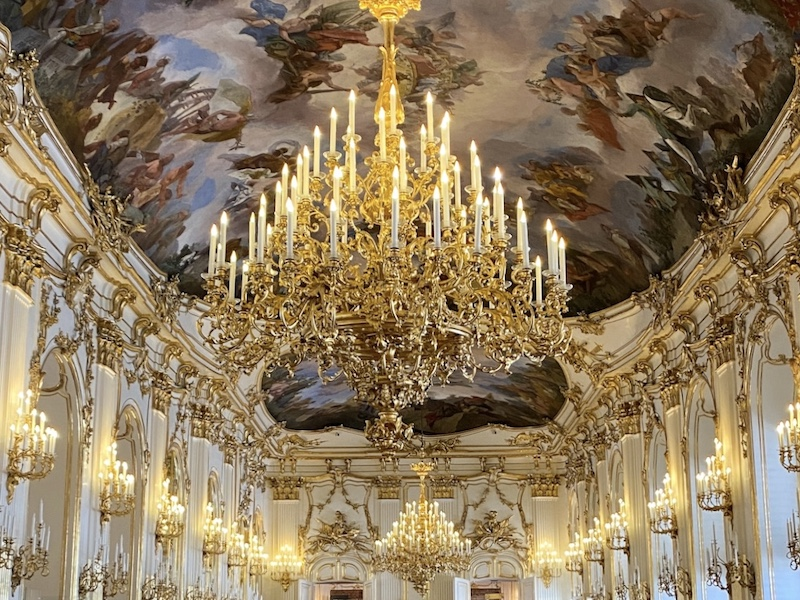
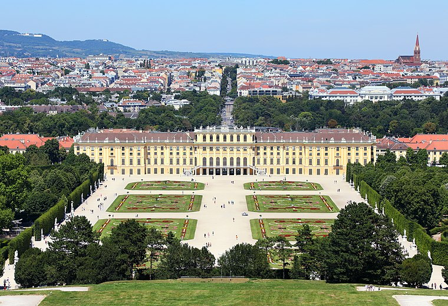

La antigua residencia de verano de los Habsburgo destaca con sus esplendorosas estancias imperiales, un fantástico jardín y una experiencia en realidad virtual de alta calidad. En el palacio de Schönbrunn se alojaban antaño el emperador Francisco José, la emperatriz Isabel y el resto.
El palacio de Schönbrunn es una de las construcciones barrocas más hermosas de Europa. En posesión de los Habsburgo desde 1569, la esposa del emperador Fernando II, Leonor Gonzaga, mandó construir en el recinto un palacio de los placeres, que ella misma bautizó como "Schönbrunn". El palacio y los jardines, construidos después del asedio turco a partir de 1696, sufrieron una profunda reforma encargada por María Teresa. Hoy, el palacio forma parte del patrimonio de la humanidad de la UNESCO debido a su gran importancia histórica, su carácter único y su magnífica construcción.
 